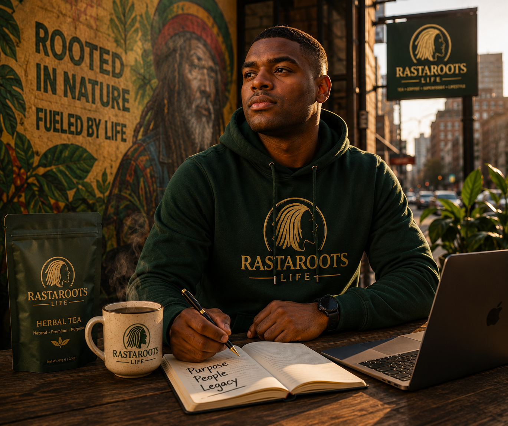
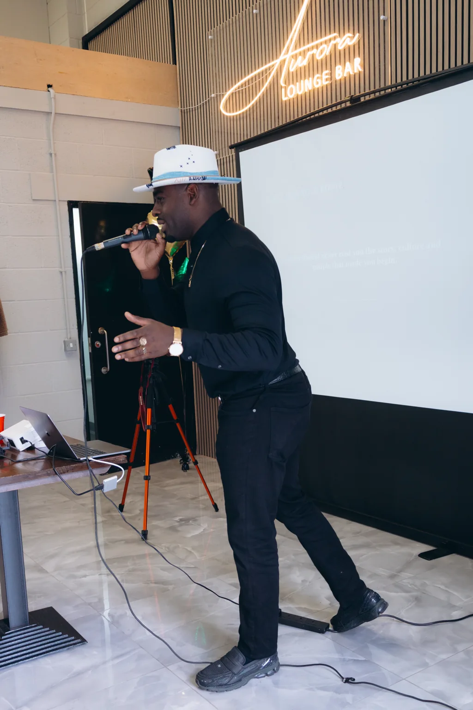
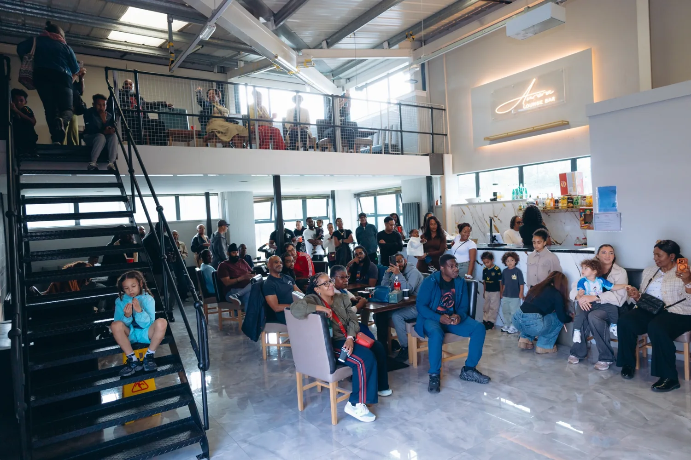
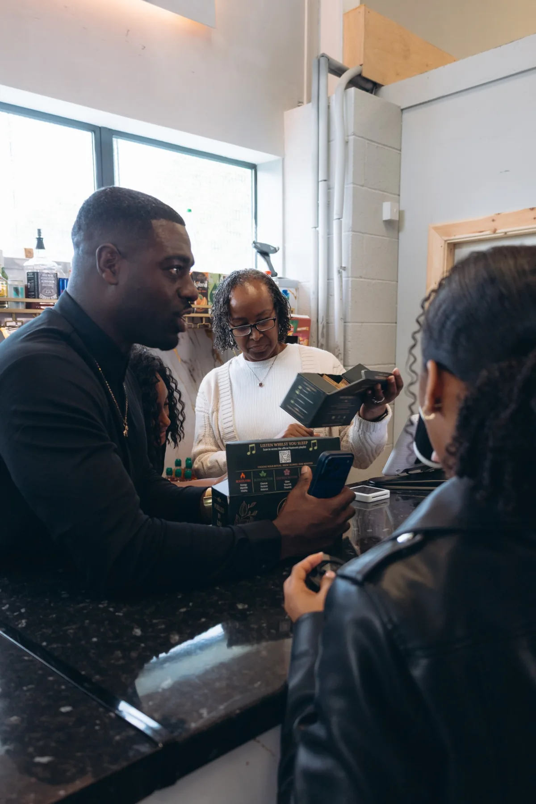
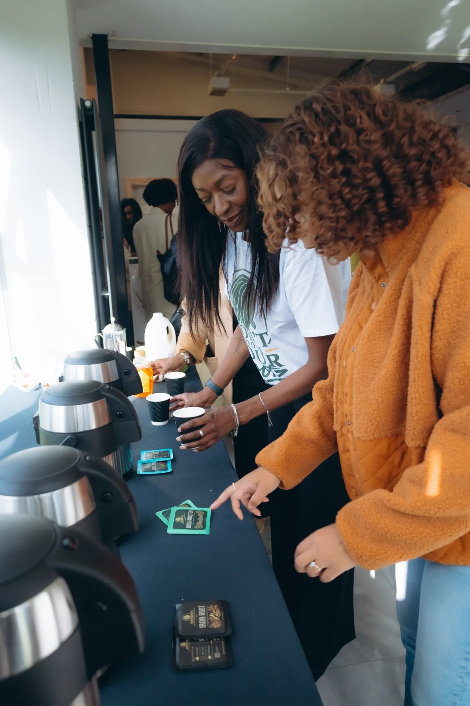
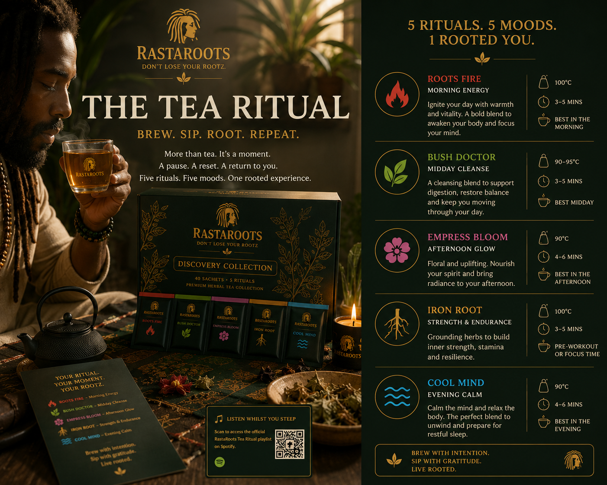

Know what is in your cup.
Herbal ingredients deserve context. Their flavour, origins, traditional use and modern evidence should be understood rather than reduced to exaggerated claims on social media.
Founder Story • Dion Depeiaza
Built in Manchester. Rooted in Caribbean heritage. Made for the next generation. Tea is our first product; connection, knowledge and community are the bigger purpose.
Dion Depeiaza
Founder, RastaRoots Life

THE RASTAROOTS DISCOVERY COLLECTION
Five Caribbean-inspired botanical blends. 25 sachets in one Discovery Collection — £19.99.

Why I Started
I started RastaRoots because I wanted to build something that meant more than another product on a shelf. Growing up around Caribbean culture taught me that food, music, plants and shared moments carry stories. Those connections deserve a place in the future, not just in our memories.
Building the brand in Manchester, I wanted to bring those influences into a modern experience without pretending that every herb comes from Jamaica or that tradition is a substitute for evidence. Our ingredients are sourced from around the world; the inspiration is rooted in Caribbean heritage.
Tea was the natural starting point. A cup gives people a moment to talk, to learn what they are drinking and to connect. That is the beginning of RastaRoots — not the limit of what it can become.
THE FOUNDER FILM
RastaRoots began with a bigger question than what to put in a tea box: how do we carry our culture, our knowledge and our connection to one another into the future?
Watch the founder film, then explore the people and principles behind the journey.
Meet the community →Founder film · 1 minute 12 seconds · Tap play to watch
FROM ROOTZ TO REALITY
At our RastaRoots tasting event in Manchester, I presented the idea behind the brand in person. People gathered to try the blends, ask questions and see what we have been building. These photographs show the beginning of that conversation.
The moment that mattered most was not standing with a microphone. It was seeing people taste the teas, discuss the ingredients and spend time together. That is the kind of connection I want RastaRoots to encourage.




The Bigger Idea
For me, “Don’t Lose Your Rootz” means taking what our families and communities have passed down and finding a meaningful place for it in everyday life. It is about identity, music, nature, conversation and the knowledge behind the herbs we use.
RastaRoots is not a promise that tea will fix everything. It is an invitation to discover five botanical blends, build your own tea ritual and explore the cultural and educational stories that make the experience richer.
We are a British brand being built in Manchester, with Caribbean-inspired creativity and botanical ingredients sourced internationally. We want to honour the traditions behind the inspiration while being transparent about the products themselves.
Why RastaRoots Exists
Herbal ingredients deserve context. Their flavour, origins, traditional use and modern evidence should be understood rather than reduced to exaggerated claims on social media.
A kettle, a cup and a few minutes can become an intentional break from constant noise. Tea Ritual was created around that idea.
Heritage should not be treated as decoration. It should remain connected to people, stories, music, food, plants, values and community.
Tea Ritual
Tea Ritual is where the philosophy becomes something practical. Choose the blend that fits the moment, prepare it deliberately, put on the RastaRoots playlist and give your attention somewhere worth keeping.
It does not need to be complicated. The point is not perfection. The point is presence.
Explore Tea Ritual →
What We Are Building
Tea is the beginning. These are the four connected parts of the RastaRoots vision.
Signature herbal rituals today, with more rooted products and experiences developing over time.
Explore The Blends →Music, preparation and intentional pauses that turn a simple cup into something people want to return to.
Explore Tea Ritual →The Herbal Library helps make plant knowledge easier to understand while respecting both tradition and modern evidence.
Enter The Herbal Library →A long-term ambition to use the brand to support community, heritage, wellbeing and opportunities for future generations.
Explore The Vision →Founder Principles
Growth should make RastaRoots more capable — not less rooted.
We should know why something belongs in the RastaRoots world before using it because it is fashionable.
Traditional knowledge deserves respect, but health claims should not be exaggerated simply because they sell.
Growth means very little if the customer experience, ingredients or brand standards become weaker.
Not every piece of content, product or opportunity needs to be chased. The brand should remain clear about what it stands for.
The Next Chapter
One of the most important parts of the long-term RastaRoots vision is the Herbal Library.
Instead of asking customers to simply trust a product description, the library will help them understand plant origins, flavour, traditional context, preparation and modern research.
That turns RastaRoots from a company that sells herbal products into a brand that can become trusted for herbal knowledge as well.

Community
Community is not something we want to add to the brand after it grows. It is part of why RastaRoots exists. Bringing people together at our Manchester tasting event was an early step towards that commitment.
We have committed £1 from each Discovery Collection sold to our Build Our Communities Back fund. Our longer-term ambition is to support grassroots opportunities for young people, heritage and community wellbeing. We will share progress as the work develops, without promising outcomes before they are delivered.
Explore The Community Vision →Founder Promise
RastaRoots is still at the beginning. There will be things we learn, things we improve and things that change as the brand grows.
What should not change is the standard: respect the customer, respect the culture, respect the ingredients and build something worthy of lasting.
FOUNDER QUESTIONS
RastaRoots Life was founded by Dion Depeiaza. The brand is being built in Manchester around herbal tea, Caribbean-inspired culture, education, everyday ritual and community.
RastaRoots is a Manchester-built British brand inspired by Caribbean heritage. Its botanical ingredients are sourced internationally; Caribbean-inspired does not mean all ingredients are grown in Jamaica.
RastaRoots was created to reconnect herbal products with the traditions, stories and people behind them. Its philosophy, “Don’t Lose Your Rootz”, encourages people to carry their heritage and values forward.
Don’t Lose Your Rootz is the RastaRoots philosophy of remembering the people, culture, knowledge and values that shaped you while continuing to grow.
The Manchester tea-tasting session brought people together to try RastaRoots teas, hear the founder explain the brand and share feedback. It is part of building the brand through real conversations.
The £19.99 Founder Discovery Collection contains 25 naturally caffeine-free herbal tea sachets across five blends: Roots Fire, Bush Doctor, Empress Bloom, Iron Root and Cool Mind.
RastaRoots commits £1 from every Discovery Collection sold to its Build Our Communities Back fund, intended to support grassroots community initiatives. Read the community page for the evolving mission.
The RastaRoots Herbal Library introduces botanical ingredients, their cultural and traditional context, preparation and modern evidence. It is educational and does not replace medical advice.
The First Chapter
The Founder Discovery Collection is the first physical chapter of the wider RastaRoots vision. Explore the five rituals and become part of the beginning.